사회조사분석사-2급 (2011-08-21 기출문제)
1과목: 조사방법론 I
1. 다음 중 개념(concepts)의 정의와 가장 거리가 먼 것은?
- 일정한 관계 사실에 대한 추상적인 표현
- 특정한 여러 현상들을 일반화함으로써 나타내는 추상적인 용어
- 현상을 예측 설명하고자 하는 명제, 이론의 전개에서 그 바탕을 이루는 역할
- 사실과 사실 간의 관계에 논리의 연관성을 부여하는 것
(정답률: 65%)

2. 동일한 대상에게 동일한 현상에 대한 서로 다른 시점에 걸쳐 지속적으로 반복측정하는 조사방법은?
- 패널(panel) 조사
- 인서트(insert) 조사
- 콜인(call in) 조사
- 출구조사(exit poll) 조사
(정답률: 79%)
3. 면접조사 시 조사자가 유의해야 할 사항과 가장 거리가 먼 것은?
- 응답자와 친숙한 분위기(rapport)를 형성해야 한다.
- 조사에 임하기 전에 스스로 질문내용에 대해 숙지하고 있어야 한다.
- 가급적이면 응답자가 이질감을 느끼지 않도록 복장이나 언어사용에 유의하여야 한다.
- 응답내용은 조사자가 해석하여 요약정리해 두는 것이 바람직하다.
(정답률: 89%)
4. 다음 중 과학적 조사연구의 특징과 가장 거리가 먼 것은?
- 논리적 체계성
- 주관성
- 수정가능성
- 경험적 실증성
(정답률: 78%)
5. 다음 질문항목의 문제점을 지적한 것으로 가장 적합한 것은?
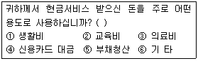
- 가능한 응답을 모두 제시해 주어야 한다.
- 응답항목들 간의 내용이 중복되어서는 안 된다.
- 하나의 항목으로 2가지 내용의 질문을 해서는 안 된다.
- 대답을 유도하는 질문을 해서는 안 된다.
(정답률: 75%)
6. 사전-사후 측정에서 나타나는 사전측정의 영향을 제거하기 위해 사전측정을 한 집단과 그렇지 않은 집단을 나누어 동일한 처치를 가하여 모든 외생변수의 통제가 가능한 실험 설계 방법은?
- 통제집단 사전사후실험설계
- 요인설계
- 솔로몬 4집단설계
- 관련통제집단설계
(정답률: 40%)
7. 1990년에 특정한 3개의 고등학교(A, B, C)의 졸업생들을 대상으로 향후 10년간 매년 일정시점에 조사를 한다면 어떤 조사에 해당하는가?
- 횡단 조사
- 서베이 리서치
- 코호트 조사
- 사례 조사
(정답률: 72%)
8. 다음 중 탐색조사(exploratory research)의 연구목적을 반영하고 있는 것으로만 짝지어진 것은?
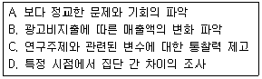
- A, C
- B, C
- B, D
- C, D
(정답률: 62%)
9. 집단이나 집합체 단위의 조사에 근거해서 그 안에 소속된 개별단위들에 대한 성격을 규정하는 오류는?
- 원자오류
- 생태학적 오류
- 환원주의적 오류
- 무작위적 오류
(정답률: 79%)
10. 양적연구와 질적연구에 대한 설명으로 틀린 것은?
- 양적연구는 연구대상의 관계를 통계적으로 분석을 통하여 밝히는 연구이다.
- 질적연구는 주관적·해석적 연구방법이다.
- 양적연구는 확인 지향적 또는 확증적 연구방법이다.
- 질적연구는 강제적 측정과 통제된 측정을 이용하는 방법이다.
(정답률: 71%)
11. 다음 중 집단조사의 장점과 가장 거리가 먼 것은?
- 비용과 시간을 절약하고 동일성을 확보할 수 있다.
- 조사자와 응답자간 직접 대화할 수 있는 기회가 있어 질문지에 대한 오해를 최소로 줄일 수 있다.
- 면접방식과 자기기입의 방식을 조합하여 실시할 수 있다.
- 중립적인 응답의 가능성을 높일 수 있고, 집단을 위해 바람직하다고 생각되는 응답을 할 수 있다.
(정답률: 61%)
12. 다음 중 실험설계의 특징이 아닌 것은?
- 실험의 검증력을 극대화 시키고자 하는 시도이다.
- 연구가설의 진위여부를 확인하는 구조화된 절차이다.
- 실험의 내적 타당도를 확보하기 위한 노력이다.
- 조작(manipulation)적 상황을 최대한 배제하고 자연적 상황을 유지해야 하는 표준화된 절차이다.
(정답률: 80%)
13. 문헌조사(literature review)의 유용성과 가장 거리가 먼 것은?
- 연구문제 및 가설의 구체화
- 연구문제 해결을 위한 새로운 접근방법의 모색
- 경험적 일반화
- 새로운 자료원에의 접근
(정답률: 56%)
14. 실험변수의 효과와는 관계없이 결과변수에 대하여 동일한 측정을 반복함으로써 결과 변수값의 변화를 발생하는 것은?
- 주시험효과(main testing effect)
- 상호작용시험효과(interaction testing effect)
- 실험대상의 소멸(mortality)
- 통계적 회귀(statistic regression)
(정답률: 59%)
15. 과학적 조사의 일반적인 절차를 바르게 나열한 것은?
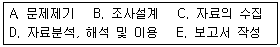
- A → B → C → D → E
- A → C → B → D → E
- A → C → D → B → E
- A → D → C → B → E
(정답률: 72%)
16. 다음 중 전화조사의 일반적인 특징에 대한 설명으로 틀린 것은?
- 자유응답형 질문으로 심층적인 정보를 얻을 수 있다.
- 질문의 양이 제한적이다.
- 전화번호부를 이용해 비교적 쉽고 정확하게 모집단에서 표본을 추출할 수 있다.
- 빠른 시간에 저렴한 비용으로 조사를 실시할 수 있다.
(정답률: 70%)
17. 설문지를 작성하여 사전조사(pre-test)를 할 때의 설명으로 옳은 것은?
- 사전조사는 1회 이상 실시하는 것이 좋다.
- 본조사의 응답자 크기와 비슷하게 실시하는 것이 좋다.
- 응답자의 대표성을 고려할 필요는 없다.
- 면접방법으로 조사하지 않는 것이 좋다.
(정답률: 64%)
18. 다음의 사례에서 활용한 연구방법은?
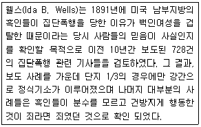
- 투사법
- 내용분석법
- 질적연구법
- 사회성 측정법
(정답률: 73%)
19. 다음 중 가설의 특성에 대한 설명으로 틀린 것은?
- 가설은 검증될 수 있어야 한다.
- 가설은 문제를 해결해 줄 수 있어야 한다.
- 가설이 부인되었다면 반대되는 가설이 검증된 것이다.
- 가설은 변수로 구성되며, 그들 간의 관계를 나타내고 있어야 한다.
(정답률: 72%)
20. 관찰기법 분류에 관한 설명으로 틀린 것은?
- 컴퓨터브랜드 선호도 조사를 위해 판매 매장과 비슷한 상황을 만들어 표본으로 선발된 소비자로 하여금 제품을 선택하게 하여 행동을 관찰한다면 자연적 관찰이다.
- 응답자가 자신이 관찰된다는 사실을 알려주고 관찰하는 것은 공개적 관찰이다.
- 관찰할 내용이 미리 명확히 결정되어, 준비된 표준양식에 관찰 사실을 기록하는 것은 체계적 관찰이다.
- 청소년의 인터넷 이용실태를 조사하기 위해 PC방을 방문하여 이용 상황을 옆에서 직접 지켜본다면 직접관찰이다.
(정답률: 74%)
21. 표본조사와 전수조사에 대한 설명으로 틀린 것은?
- 표본조사 과정에서 발생하는 비표본오류 때문에 표본조사는 전수조사보다 부정확하다.
- 전수조사는 표본조사보다 많은 비용과 시간이 필요로 한다.
- 경우에 따라서는 전수조사 자체가 아예 불가능한 경우도 있다.
- 모집단이 작은 경우 추정의 정도를 높이는데 전수조사가 더 정밀하다.
(정답률: 82%)
22. 응답자의 내면에 있는 신념이나 태도 등을 단어 연상법, 문장 완성법, 그림 묘사법, 만화 완성법 등과 같은 다양한 심리적인 동기 유발방법을 이용하여 조사하는 방법은?
- 설문지법
- 서베이법
- 면접법
- 투사법
(정답률: 75%)
23. 실험적 연구에서 연구자에 의해서 조작되는 변수는?
- 독립변수
- 종속변수
- 매개변수
- 외생변수
(정답률: 61%)
24. 다음 중 2차 자료를 이용하는 조사방법은?
- 현지조사
- 패널조사
- 실험
- 문헌조사
(정답률: 78%)
25. 다음 중 참여관찰의 단점과 가장 거리가 먼 것은?
- 객관성을 잃기 쉽다.
- 수집한 자료의 표준화가 어렵다.
- 자연스러운 상태를 관찰하기 어렵다.
- 집단상황에 익숙해지면 관찰대상을 놓칠 수 있다.
(정답률: 85%)
26. 사회과학적 연구방법 중 연역적 접근방법에 대한 설명으로 옳은 것은?
- 관찰을 통해 현상을 파악한다.
- 개별사례를 바탕으로 일반적 유형을 찾아낸다
- 탐색적 방법에 주로 이용된다.
- 이론 또는 모형 설정 후 연구를 시작한다.
(정답률: 72%)
27. 진행자(moderator)가 동질의 소수 응답자 집단을 대상으로 특정한 주제에 대하여 자유롭게 토론하는 가운데 필요한 정보를 수집하는 방법은?
- 문헌연구
- 전문가 의견조사
- 표적집단면접법
- 사례연구
(정답률: 88%)
28. 심층면접법(depth interview)에 관한 설명으로 틀린 것은?
- 질문의 순서와 내용은 조사자가 조정할 수 있어 좀 더 자유롭고 심도 깊은 질문을 할수 있다.
- 조사자의 면접능력과 분석능력에 따라 조사결과의 신뢰도가 달라진다.
- 초점집단면접과 비교하여 자유롭게 개인적인 의견을 교환할 수 없다.
- 조사자가 필요하다고 생각되면 반복질문을 통해 타당도가 높은 자료를 수집한다.
(정답률: 60%)
29. 다음 중 가설로 적합하지 않은 것은?
- 지연 때문에 행정의 발전이 저해된다.
- 부모간의 불화가 소년범죄를 유발한다.
- 기업 경영은 근본적으로 인간이 결정한다.
- 도시 거주자들이 농어촌에 거주하는 사람들 보다 더 야당성향을 띤다.
(정답률: 74%)
30. 다음 중 질문지 작성의 원칙이 아닌 것은?
- 명확성
- 부연설명
- 가치중립성
- 규범적 응답의 억제
(정답률: 57%)
2과목: 조사방법론 II
31. 다음 ( )안에 들어갈 알맞은 것은?
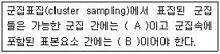
- A . 동질적, B . 동질적
- A . 동질적, B . 이질적
- A . 이질적, B . 동질적
- A . 이질적, B . 이질적
(정답률: 66%)
32. 측정을 받는 일반인들이 측정에 사용된 문항들이 측정하고자 하는 개념을 잘 측정한다고 느끼는 정도를 무엇이라고 하는가?
- 판별타당도(discriminant validity)
- 안면타당도(face validity)
- 준거관련타당도(criterion-related validity)
- 구성타당도(construct validity)
(정답률: 44%)
33. 창의성을 측정하기 위해 새롭게 개발된 측정도구의 수렴타당성(convergent validity)이 높은 경우는?
- 새로운 창의성 측정도구와 기존의 창의성 측정도구로 측정된 점수들 간의 상관이 높은 경우
- 새로운 창의성 측정도구와 지능검사로 측정된 점수들 간의 상관이 높은 경우
- 새로운 창의성 측정도구와 예술성 측정도구로 측정된 점수들 간의 상관이 높은 경우
- 새로운 창의성 측정도구와 신체적 능력 측정도구로 측정된 점수들 간의 상관이 높은 경우
(정답률: 70%)
34. 신뢰성 측정방법인 재검사법(test-retest method)에 관한 설명으로 옳은 것은?
- 홀수문항과 짝수문항의 응답을 비교하는 방식으로 수행하기도 한다.
- 내적 일치도를 측정하는 신뢰성 측정방법이다.
- 검사-재검사 간격이 너무 짧으면 기억효과 때문에 신뢰성이 낮아진다.
- 동일한 문항을 반복해서 측정하는 것이다.
(정답률: 43%)
35. 다음 중 표본의 크기가 같다고 했을 때 표집오차가 가장 작은 표집방법은?
- 층화표본추출(stratified sampling)
- 단순무작위표본추출(simple random sampling)
- 집락표본추출(cluster sampling)
- 체계적표본추출(systematic sampling)
(정답률: 29%)
36. 서스톤척도(Thurston scale)에 대한 설명으로 틀린 것은?
- 처음 문장을 분류하는 평가자들의 성격에 따라 분포가 달라질 수 있다.
- 절차가 다른 척도보다 단순하고 문장이나 평가자의 수가 적어도 된다.
- 척도용으로 선정된 문장들이 평균값은 같으나 분산도가 다를 수 있다.
- 응답자의 점수가 같더라도 그가 선택하는 문항의 종류와 내용이 다를 수 있다.
(정답률: 60%)
37. 두 변수간의 사실적인 관계를 약화시키거나 소멸시켜 버리는 검정변수는?
- 선행변수(antecedent variable)
- 매개변수(intervening variable)
- 억제변수(suppressor variable)
- 왜곡변수(distorter variable)
(정답률: 56%)
38. 다음 중 측정수준별 그 예가 틀린 것은?
- 서열측정 . 학급 석차(등수)
- 비율측정 . 지능지수(IQ)
- 명목측정 . 주민등록번호
- 등간측정 . 온도
(정답률: 68%)
39. 다음 중 표본추출에 대한 설명으로 틀린 것은?
- 표본조사가 전수조사에 비해 신뢰성이 더 높을 수 있다.
- 관찰단위와 분선단위가 반드시 일치하는 것은 아니다.
- 모수는 표본조사를 통해 얻는 통계량을 바탕으로 추정한다.
- 단순무작위추출방법은 일련번호와 함께 표본간격이 중요하다.
(정답률: 57%)
40. 다음 중 할당표본추출법(quota sampling)의 단점은?
- 무작위표본추출보다 비용이 많이 든다.
- 일반화가 어렵고 표본오차가 커질 가능성이 높다.
- 신속한 결과를 원할 때 사용이 불가능하다.
- 각 집단을 적절히 대표하게 하는 층화의 효과가 없다.
(정답률: 49%)
41. 모집단을 구성하고 있는 구성요소들이 자연적인 순서 또는 일정한 질서에 따라 배열된 목록에서 매 k번째의 구성요소를 추출하여 표본을 형성하는 표본추출방법은?
- 체계적표본추출(systematic sampling)
- 무작위표본추출(random sampling)
- 층화표본추출(stratified sampling)
- 집락표본추출(cluster sampling)
(정답률: 70%)
42. 연구대상자의 속성을 일정한 규칙에 따라서 수량화하는 것을 무엇이라 하는가?
- 척도
- 측정
- 요인
- 속성
(정답률: 65%)
43. 다음 ( )안에 들어갈 알맞은 것은?
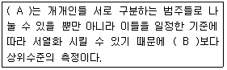
- A . 명목측정, B . 서열측정
- A . 등간측정, B . 비율측정
- A . 명목측정, B . 비율측정
- A . 서열측정, B . 명목측정
(정답률: 70%)
44. 다음 중 불법 체류자처럼 일반적으로 쉽게 접근하기 힘든 집단을 대상으로 설문조사를 할 때 가장 적합한 표본추출방법은?
- 눈덩이표본추출(snowball sampling)
- 편의표본추출(convenience sampling)
- 판단표본추출(judgment sampling)
- 할당표본추출(quota sampling)
(정답률: 76%)
45. 오후 2시부터 4시 사이 서울 강남역을 지나는 행인들 중 접근이 쉬운 사람을 대상으로 신제품에 대한 의견을 물어보는 경우 이에 해당하는 표본추출방법은?
- 판단표본추출(judgment sampling)
- 편의표본추출(convenience sampling)
- 층화표본추출(stratified sampling)
- 집락표본추출(cluster sampling)
(정답률: 68%)
46. 척도와 지수에 관한 설명으로 틀린 것은?
- 지수는 개별적인 속성들에 할당된 점수들을 단순 합산하여 구한다.
- 척도는 속성들 간에 존재하고 있는 강도(intensity)구조를 이용한다.
- 지수는 척도보다 더 많은 정보를 제공해준다.
- 척도와 지수 모두 변수에 대한 서열측정이다.
(정답률: 51%)
47. 측정오차의 발생원인과 가장 거리가 먼 것은?
- 통계분석기법
- 측정방법 자체의 문제
- 측정시점에 따른 측정대상자의 변화
- 측정시점의 환경요인
(정답률: 66%)
48. 사회계층간 사회적 거리(social distance)의 측정변수로 가장 부적합한 것은?
- 상류층과 하류층간의 소득격차
- 사회계층간 교육수준의 차이
- 상류층과 중류층간의 거주지역의 차이
- A집단과 B집단에서 사용하는 언어의 차이
(정답률: 68%)
49. 전수조사 대신 표본조사를 하는 이유와 가장 거리가 먼 것은?
- 경비를 절감하기 위해
- 정확도를 높이기 위해
- 표본오류를 줄이기 위해
- 광범위한 주제에 걸쳐서 연구하기 위해
(정답률: 56%)
50. 우리나라 100대 기업의 연간 순수입을 ‘원’ 단위로 조사하고자 할 때 측정의 수준은?
- 명목측정
- 서열측정
- 등간측정
- 비율측정
(정답률: 63%)
51. 다음 중 비표본오차의 원인과 가장 거리가 먼 것은?
- 표본선정의 오류
- 조사설계상 오류
- 조사표 작성 오류
- 조사자의 오류
(정답률: 55%)
52. 잠재변수와 관찰변수에 관한 설명으로 틀린 것은?
- 잠재변수란 직접 관찰이 불가능한 변수를 의미한다.
- 대학생의 성적을 평점평균으로 나타낸 것은 관찰변수에 해당한다.
- 하나의 잠재변수를 측정하기 위해 하나의 관찰변수를 사용하는 것이 바람직하다.
- 지능, 태도, 직무만족도는 잠재변수에 해당한다.
(정답률: 65%)
53. 사회과학에서 척도를 구성하는 이유가 아닌 것은?
- 측정의 신뢰성을 높여준다.
- 변수에 대한 실적인 측정치를 제공한다.
- 하나의 지표로 측정하기 어려운 복합적인 개념들을 측정한다.
- 여러 개의 지표를 하나의 점수로 나타내어 자료의 복잡성을 덜어준다.
(정답률: 32%)
54. 측정에 있어서 신뢰성을 높이는 방법과 가장 거리가 먼 것은?
- 전문가의 의견을 듣고 문항을 만든다.
- 측정항목의 수를 늘린다.
- 측정항목의 모호성을 제거한다.
- 중요한 질문의 경우 유사한 문항을 반복하여 물어본다.
(정답률: 56%)
55. 어떤 선생님이 학생들의 지능지수(IQ)를 측정하기 위해 정확하기로 소문난 전자저울(체중계)을 사용했을 때, 측정의 신뢰도와 타당도에 관한 설명으로 옳은 것은?
- 신뢰도와 타당도 모두 낮다.
- 신뢰도와 타당도 모두 높다.
- 신뢰도는 낮지만 타당도는 높다.
- 신뢰도는 높지만 타당도는 낮다.
(정답률: 60%)
56. 다음 중 확률표본추출방법에 해당하는 것은?
- 편의표본추출(convenience sampling)
- 판단표본추출(judgment sampling)
- 층화표본추출(stratified sampling)
- 눈덩이표본추출(snowball sampling)
(정답률: 72%)
57. 다음 중 표집오차(sampling error)에 관한 설명으로 틀린 것은?
- 전체 표본의 크기가 같다고 했을 때, 단순무작위표본추출법에서보다 층화표본추출법에서 표집오차가 작게 나타난다.
- 전체 표본의 크기가 같다고 했을 때, 단순무작위표본추출법에서보다 집락표본추출법에서 표집오차가 크게 나타난다.
- 단순무작위표본추출법에서 표집오차는 표본의 크기가 클수록 커진다.
- 단순무작위표본추출법에서 표집오차는 분산의 크기가 클수록 커진다.
(정답률: 67%)
58. 여러 문항으로 이루어진 척도의 신뢰성을 보여주기 위해 제시하는 통계치는?
- 크론바하
- 평균
- 표준편차
- 분산
(정답률: 66%)
59. 다음 중 표집틀(sampling frame)이 모집단(population)보다 큰 경우는?
- A병원 환자를 환자기록부를 이용해서 표집하는 경우
- A병원 환자를 병원 입구에서 임의로 표집하는 경우
- A병원 환자를 서울지역 휴대폰 가입자 명부를 이용해서 표집하는 경우
- A병원에서 무선적 전화걸기방법으로 표집하는 경우
(정답률: 60%)
60. 척도를 구성하는 과정에서 질문 문항들이 단일차원을 이루는지를 검증할 수 있는 척도는?
- 의미분화척도(semantic differential scale)
- 서스톤척도(thurstone scale)
- 리커트척도(likert scale)
- 거트만척도(guttman scale)
(정답률: 55%)
3과목: 사회통계
61. 독립시행 횟수가 10이고 성공확률이 0.5인 이항분포에서 1회의 성공의 발생할 확률 A와 10회의 성공이 발생할 확률 B 사이의 관계는?
- A < B
- A = B
- A > B
- A + B = 1
(정답률: 33%)
62. 실험계획에서 데이터의 산포에 영향을 미치는 여러 가지 원인들 중에서 실험에 직접 취급되는 원인을 무엇이라 하는가?
- 인자
- 실험단위
- 수준
- 실험자
(정답률: 49%)
63. 평균이 5이고 표준편차가 2인 정규분포를 따르는 확률변수 X 를 관측할 때 X 의 관측 값이 4보다 크고 6보다 작을 확률을 구하면?(단, P(Z<0.5)=0.6915, Z 는 표준정규확률변수)
- 0.3085
- 0.3830
- 0.2580
- 0.6915
(정답률: 50%)
64. 다음 중 자료의 산포(dispersion)의 정도를 나타내는 측도가 아닌 것은?
- 범위(range)
- 사분편차(quartile deviation, 사분위수범위)
- 변동계수(coefficient of variation)
- 왜도(skewness)
(정답률: 47%)
65. 임의의 모집단으로부터 확률표본을 취할 때 표본평균의 확률분포는 표본의 크기가 충분히 크면 근사적으로 정규분포를 따른다는 사실의 근거가 되는 이론은?
- 중심극한의 정리
- 대수의 법칙
- 체비셰프의 부등식
- 확률화의 원리
(정답률: 59%)
66. 다음 중 제1종 오류를 범할 확률의 허용한계를 뜻하는 통계적 용어는?
- 유의수준
- 기각역
- 검정통계량
- 대립가설
(정답률: 57%)
67. 표본의 크기가 n=10 에서 n=160 으로 증가한다면, 평균의 표준오차는 n=10 에서 얻은 경우와 비교하여 몇 배가 되는가?
- 1/4
- 1/2
- 2
- 4
(정답률: 40%)
68. 두 변수 X 와 Y 의 상관계수가 0.1일 때, 2X 와 3Y 의 상관계수는?
- 0.6
- 0.3
- 0.2
- 0.1
(정답률: 32%)
69. 정규분포를 따르는 어떤 집단의 모평균이 10인지를 검정하기 위하여 크기가 25인 표본을 추출하여 관찰한 결과 표본평균은 9, 표본표준편차는 2.5였다. t-검정을 할 경우 검정통계량의 값은?
- 2
- 1
- -1
- -2
(정답률: 28%)
70. 한국, 미국, 일본의 대졸 신입사원의 월급은 평균 210만원, 3500달러, 25만엔이고, 표준편차는 각각 50만원, 350달러, 2만7천엔인 정규분포를 따른다고 한다. 위 3개국에서 임의로 한 명씩 뽑힌 대졸 신입사원 A, B, C의 월급이 250만원, 3750달러, 27만엔이라 할 때, 자국 내에서 상대적으로 월급을 많이 받는 사람 순서대로 나열한 것은?
- A > B > C
- A > C > B
- B > C > A
- B > A > C
(정답률: 36%)
71. 형광등을 대량 생산하고 있는 공장이 있다. 제품의 평균수명시간을 추정하기 위하여 100개의 형광등을 임의로 추출하여 조사한 결과, 표본으로 추출한 형광등 수명의 평균은 500시간, 그리고 표준편차는 40시간이었다. 모집단의 평균수명에 대한 95% 신뢰구간을 추정하면? (단, Z=0.025=1.96, Z0.0⑤=2.58)
- (492.16, 510.32)
- (492.16, 507.84)
- (489.68, 507.84)
- (489.68, 510.32)
(정답률: 49%)
72. 눈의 수가 3이 나타날 때까지 계속해서 공정한 주사위를 던지를 실험에서 주사위를 던진 횟수를 확률변수 X 라고 할 때, X 의 기대값은?
- 3.5
- 5
- 5.5
- 6
(정답률: 34%)
73. 두 변수에 대한 자료가 다음과 같이 주어졌을 때 단순회귀모형으로 추정된 회귀직선으로 옳은 것은?
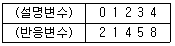
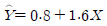
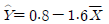
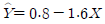
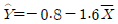
(정답률: 45%)
74. 모집단의 평균을 추정하기 위해 1,000개의 표본을 취하여 정리한 결과 표본평균은 100, 표준편차는 5로 계산되었다. 모평균에 대한 점추정치는?
- 10
- 100
- 5
- 25
(정답률: 29%)
75. 다음 회귀모형
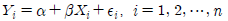
에 관한 설명으로 틀린 것은?- 결정계수 R2는 Y의 총변동에 대한 회귀모형으로 인한 변동의 비율을 말하며 X 와 Y 의 상관계수와는 관계없는 값이다.
- β=0 인 가설을 검정하기 위하여 자유도가 n-2 인 t분포를 사용할 수 있다.
- 오차
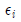
의 분산의 추정량은 평균제곱오차이며 보통 MSE 로 나타낸다. - 잔차그림을 보면 회귀모형의 가정이 자료에 잘 맞는지를 알 수 있다.
(정답률: 30%)
76. 동전을 3번 던졌을 때 앞면(H)이 한번 이상 나타날 확률은?
- 3/8
- 2/3
- 7/8
- 1/3
(정답률: 50%)
77. 다음 중 검정통계량의 분포가 정규분포를 이용하지 않는 검정은?
- 대표본에서 모평균의 검정
- 대표본에서 두 모비율의 차에 관한 검정
- 모집단이 정규분포인 대표본에서 모분산의 검정
- 모집단이 정규분포인 소표본에서 모분산을 알 때, 모평균의 검정
(정답률: 32%)
78. 다음 분산분석(ANOVA)표는 상품포장색깔(빨강, 노랑, 파랑)이 판매량에 미치는 영향을 알아보기 위해서 4곳의 가게를 대상으로 실험한 결과이다. 분산분석표에서 잔차 평균제곱 A 값은 얼마인가?
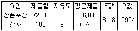
- 11.33
- 14.33
- 10.23
- 13.23
(정답률: 58%)
79. 어떤 지역 선거에서 유력 후보에 대한 지지율은 60%라고 한다. 유권자 중 20명을 무작위로 뽑아 조사할 때 몇 명 정도가 유력 후보를 지지할 것으로 기대되는가?
- 6명
- 8명
- 10명
- 12명
(정답률: 49%)
80. 일원배치 분산분석에서 인자의 수준이 3이고 각 수준마다 반복실험을 5회씩 한 경우 잔차(오차)의 자유도는?
- 9
- 10
- 11
- 12
(정답률: 50%)
81. A 콜택시회사는 고객이 전화를 한 뒤 요청한 곳에 택시가 도착하기까지의 소요시간을 알아보기 위해 100번의 전화요청에 대해 소요시간을 조사했다. 그 결과 표본평균은 13.3분이었고, 표준편차는 4.2분이었다. 소요시간이 정규분포를 따른다고 가정하고 모평균에 대한 95% 양측신뢰구간을 구하면? (단, P(Z>1.645)=0.⑤, P(Z>1.96)=0.025, P(Z>2.325)=0.01, P(Z>2.575)=0.0⑤)
- 13.3±0.08
- 13.3±0.42
- 13.3±0.69
- 13.3±0.82
(정답률: 42%)
82. 다음 중 상관관계에 대한 설명으로 옳은 것은?
- 두 변수 간에 강한 상관관계가 존재하면 두 변수는 서로 독립이다.
- 상관관계의 값은 항상 0 이상 1 이하이다.
- 상관관계의 부호는 공분산의 부호와 같다.
- 상관관계의 크기는 회귀직선의 기울기 크기와 같다.
(정답률: 35%)
83. A회사에서 생산하고 있는 정구의 수명시간은 평균이 μ=800(시간)이고 표준편차가 σ=40(시간)이라고 한다. 무작위로 이 회사에서 생산한 전구 64개를 조사하였을 때 표본의 평균수명시간이 790.2시간 미만일 확률은 약 얼마인가? (단, Z0.0⑤=2.58, Z0.025=1.96, Z0.⑤=1.645)
- 0.01
- 0.025
- 0.⑤
- 0.10
(정답률: 53%)
84. 표본으로 추출된 15명의 성인을 대상으로 지난해 감기로 앓았던 일수를 조사하여 다음의 데이터를 얻었다. 평균, 중앙값, 최빈값, 범위를 계산한 값 중 틀린 것은?(오류 신고가 접수된 문제입니다. 반드시 정답과 해설을 확인하시기 바랍니다.)
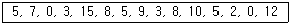
- 평균값 = 6
- 중앙값 = 5
- 최빈값 = 5
- 범위 = 14
(정답률: 40%)
85. 다음 중 연속확률변수인 것은?
- A대학 학생의 인터넷 사용 여부
- A대학 학생의 일주일 평균 인터넷 사용 정도: 상, 중, 하
- A대학 학생의 일주일 평균 인터넷 사용 시간
- A대학의 B컴퓨터 실습실에서 1시간 이상 지속적으로 컴퓨터를 사용하는 학생의 수
(정답률: 53%)
86. 평균이 μ 이고, 표준편차가 σ 인 정규모집단으로부터 표본을 관측할 때, 관측값이 μ+2σ 와 μ-2σ 사이에 존재할 확률은 약 몇 %인가?
- 33%
- 68%
- 95%
- 99%
(정답률: 48%)
87. 어느 회사는 노조와 협의하여 오후의 중간 휴식시간을 20분으로 정하였다. 그런데 총무과장은 대부분의 종업원이 규정된 휴식시간보다 더 많은 시간을 쉬고 있다고 생각하고 있다. 이를 확인하기 위하여 전체 종업원 1000명 중에서 25명을 조사한 결과 표본으로 추출된 종업원 평균 휴식시간은 22분이고 표준편차는 3분으로 계산되었다. 유의 수준 α=0.⑤ 에서 총무과장의 의견에 대한 가설검정 결과로 옳은 것은? (단, t.⑤,25-1)=1.711)
- 검정통계량 t<1.711 이므로 귀무가설을 기각한다.
- 검정통계량 이므로 귀무가설을 채택한다.
- 종업원의 실제 휴식시간은 규정시간 20분보다 더 길다고 할 수 있다.
- 종업원의 실제 휴식시간은 규정시간 20분보다 더 짧다고 할 수 있다.
(정답률: 45%)
88. 한 도시의 취업적정연령인 사람들 중 1000명을 임의추출(random sampling)하여 조사한 결과 40명이 실업자였다. 실업률 p에 대한 95% 신뢰구간을 구하면?(단, P(Z>1.96)=0.025, Z~N(0,1))
- (0.0279, 0.⑤21)
- (0.0298, 0.⑤02)
- (0.0241, 0.⑤59)
- (0.0179, 0.0421)
(정답률: 26%)
89. 확률변수 에 대하여 X 의 평균은 E(X)=3 이고 X2의 평균은 E(X2)=10.4 이다. 확률변수 Y 를 Y=7X+3 이라 할 때, X 와 Y 의 공분산 Cov(X,Y)를 구하면?
- 6.8
- 7.8
- 8.8
- 9.8
(정답률: 19%)
90. 모분산이 알려져 있는 정규모집단의 모평균에 대한 구간 추정을 하는 경우, 표본의 수를 4배로 늘리면 신뢰구간의 길이는 어떻게 변하는가?
- 신뢰구간의 길이는 표본의 수와 관계없다.
- 2배로 늘어난다.
- 1/2로 줄어든다.
- 1/4로 줄어든다.
(정답률: 56%)
91. 직업별로 소비행동에 어떤 차이가 있는지를 보기 위해 취업주부를 대상으로 전문직, 사무직, 생산직으로 나누어 소비성향을 측정하였다. 이 때 소비행동은 연속변수의 척도를 구성하였다. 직업별로 소비행동의 차이가 있는지를 알아보려면 어떤 통계적 분석을 실시하는 것이 가장 적합한가?
- 분할표 분석
- 판별분석
- 상관관계분석
- 분산분석
(정답률: 39%)
92. 다음 중 변동계수(coefficient of variation)에 대한 설명으로 틀린 것은?
- 상대적인 산포의 측도로서 표준편차를 표본평균으로 나눈 값으로 정의된다.
- 변동계수는 단위에 의존하지 않는 통계량이다.
- 단위가 서로 다르거나 또는 집단간에 평균의 차이가 큰 산포를 비교하는데 유용하게 사용된다.
- 변동계수는 0 이상, 1 이하의 값을 가지며, 때로 %로 나타내기도 한다.
(정답률: 27%)
93. 도수분포가 비대칭이고 극단치들이 있을 때 보다 적절한 중심성향 측도는?
- 산술평균
- 중위수
- 최빈수
- 조화평균
(정답률: 50%)
94. 표본자료로부터 추정한 모평균 μ에 대한 95% 신뢰구간이 (-0.042, 0.522)일 때, 유의 수준 0.⑤에서 귀무가설 H0:μ=0 대 대립가설 H1:μ≠0 의 검증 결과는 어떻게 해석 할 수 있는가?
- 신뢰구간과 가설검증은 무관하기 때문에 신뢰구간을 기초로 검증에 대한 어떠한 결론도 내릴 수 없다.
- 신뢰구간이 0을 포함하기 때문에 귀무가설을 기각할 수 없다.
- 신뢰구간의 상한이 0.522로 0보다 상당히 크기 때문에 귀무가설을 기각해야 한다.
- 신뢰구간을 계산할 때 표준정규분포의 임계값을 사용했는지 또는 t 분포의 임계값을 사용했는지에 따라 해석이 다르다.
(정답률: 43%)
95. 평균이 10이고 분산이 4인 분포로부터 100개의 표본을 추출하였을 때, 표본평균을
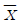
라 하자. P(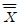
<10.33) 를 구하면? (단, P(Z>1.96)=0.025, P(Z>1.65)=0.⑤, P(Z>8.25)=0, P(Z>0.825)=0.2⑤,)- 0.795
- 0.95
- 0.975
- 1
(정답률: 31%)
96. 서로 독립인 두 정규모집단의 모평균은 각각 μ1 과 μ2 이고 모분산은 동일하다고 가정한다. 이 두 모집단으로부터 표본의 크기가 각각 n1과 n2인 랜덤표본을 취하여 얻은 표본평균을 각각
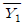
와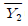
라 하고 표본분산을 각각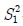
과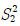
이라 하면 확률변수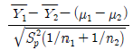
는 t-분포를 따른다. 이 때 t-분포의 자유도는? (단,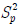
은 공통분산의 추정량이다.)- n1+n2
- n1+n2-1
- n1+n2-2
- n1+n2-3
(정답률: 38%)
97. 변수 x 와 y 에 대한 n 개의 자료
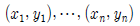
에 대하여 단순선형회귀모형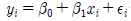
을 적합시키는 경우, 잔차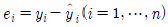
에 대한 성질이 아닌 것은?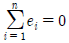
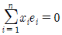
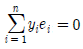
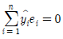
(정답률: 34%)
98. 어느 대학교 학생들의 흡연율을 조사하고자 한다. 실제 흡연율과 추정치의 차이가 5% 이내라고 90% 정도의 확신을 갖기 위해서는 얼마만큼 크기의 표본이 필요한가?(단, Z0.1=1.282, Z0.⑤=1.645, Z0.025=1.960 )
- 165
- 192
- 271
- 385
(정답률: 42%)
99. 두 명목범주형 변수 사이의 연관성을 보고자 할 때 가장 적합한 것은?
- 피어슨 상관계수
- 순위(스피어만) 상관계수
- 산점도
- 분할표(교차표)
(정답률: 31%)
100. 피어슨의 상관계수 값의 범위는?
- 0에서 1사이
- -1에서 0사이
- -1에서 1사이
- -∞에서 ∞사이
(정답률: 56%)